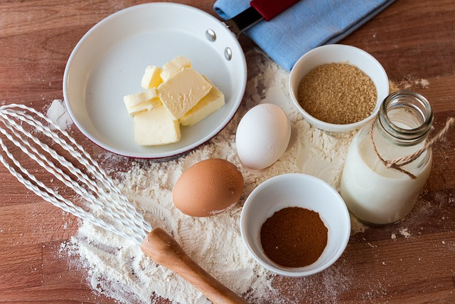

Nossa história

Era uma vez uma pequena cidade chamada Doceville, conhecida por seus deliciosos bolos e sobremesas. Lá, havia uma fábrica de bolos chamada "Bolos de Asgard", que era famosa por seus bolos caseiros e saborosos.
A fábrica foi fundada há mais de 50 anos pela avó de Maria, a atual proprietária. A avó de Maria era uma excelente cozinheira e sempre fazia bolos para a família e amigos. Ela decidiu transformar sua paixão por cozinhar em um negócio e abriu a "Bolos de Asgard".
Nos primeiros anos, a fábrica era pequena e a avó de Maria era a única responsável por fazer os bolos. Mas, com o tempo, a demanda cresceu e ela precisou contratar mais pessoas para ajudá-la.
Maria, que cresceu na fábrica e ajudou sua avó desde jovem, assumiu o negócio quando sua avó faleceu. Ela manteve as receitas tradicionais de sua avó e adicionou novos sabores e variedades ao cardápio da fábrica.
A "Bolos de Asgard" tornou-se ainda mais popular na cidade, e logo os bolos da fábrica eram vendidos em toda a região. Maria decidiu expandir os negócios e abriu filiais da fábrica em outras cidades.
Hoje, a "Bolos de Asgard" é uma marca conhecida em todo o país. A fábrica ainda mantém as receitas tradicionais e a qualidade dos bolos que eram feitos pela avó de Maria, mas agora tem uma equipe talentosa de chefs e padeiros que continuam a inovar e criar novos sabores.
A fábrica de bolos da vovó é um exemplo de como uma paixão e um talento podem se transformar em um negócio de sucesso. Maria, assim como sua avó, acredita que o segredo para um bolo perfeito é o amor e a dedicação que são colocados em cada etapa do processo de preparação.